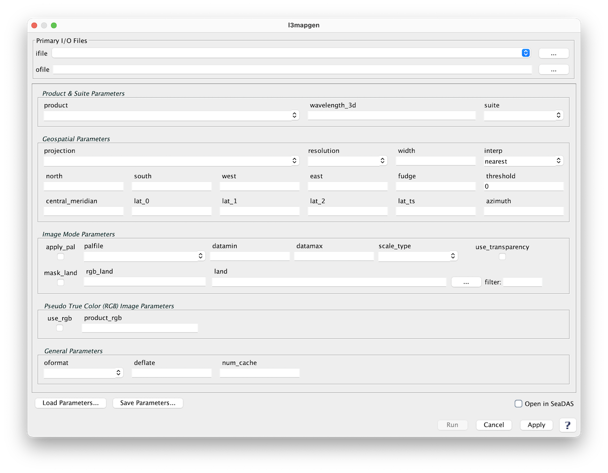

| l3mapgen | |
Creates a mapped output.
Takes a product (or products if netCDF output) from an L1, L2 or L3 bin file, reprojects the data using Proj.4 and writes a mapped file in the requested output format.
SeaDAS-OCSSW -> mapgen
|  |
| UI Element Name | Type | Description | Required/Optional | Default Value |
| ifile | ifile | input file or text file list of files. | Required | |
| ofile | ofile | output file name; default: <ifile>.MAP.<oformat ext>. | Required | |
| product | string | product(s) to map; comma separated | Required | |
| projection | string | One of the following predefined (proj4) projections may be selected:
platecarree: Plate Carree (cylindrical) projection
projection="+proj=eqc +lat_0=<central_meridian>"
mollweide: Mollweide projection
projection="+proj=moll +lat_0=<central_meridian>"
lambert: Lambert conformal conic projection
projection="+proj=lcc +lat_0=<central_meridian>"
albersconic: Albers Equal Area Conic projection
projection="+proj=aea +lat_0=<central_meridian>"
mercator: Mercator cylindrical map projection
projection="+proj=merc +lat_0=<central_meridian>"
ease2: Ease Grid 2 projection
projection="+proj=cea +lon_0=0 +lat_ts=30 +ellps=WGS84
+datum=WGS84 +units=m +lat_0=<central_meridian>"
|
Optional | platecarree |
| resolution | string | size of the output pixel in meters or SMI dimensions:
#.#: width of a pixel in meters
#.#km: width of a pixel in kilometers
#.#deg: width of a pixel in degrees
|
Optional | 2km |
| interp | string | interpolation method:
nearest: Nearest Neighbor
bin: bin all of the pixels that intersect the
area of the output pixel
area: bin weighted by area all of the pixels that
intersect the area of the output pixel
|
Optional | nearest |
| north | float | Northern most Latitude | Optional | -999 |
| south | float | Southern most Latitude | Optional | -999 |
| east | float | Eastern most Longitude | Optional | -999 |
| west | float | Western most Longitude | Optional | -999 |
| oformat | string | format of the output file :
netCDF: Network Common Data Form v4 file
can contain more than one product
png: Portable Network Graphics format image
ppm: Portable PixMap format image
tiff: Tagged Image File Format with georeference tags
|
Optional | netCDF4 |
| central_meridian | float | central meridian to use for projection in degrees east. | Optional | 0 |
| palfile | ifile | palette file name | Optional | see $OCDATAROOT/common/product.xml |
| datamin | float | minimum value for data scaling | Optional | default from product.xml |
| datamax | float | maximum value for data scaling | Optional | default from product.xml |
| scale_type | string | data scaling type:
linear: linear scaling
log: logarithmic scaling
arctan: arc tangent scaling
|
Optional | default from product.xml |
| Product_rgb | string | comma separated string of RGB products e.g., product_rgb=rhos_645,rhos_555,rhos_469. | Optional | sensor specific, see $OCDATAROOT/<sensor>/l1mapgen_defaults.par |
| fudge | float | fudge factor used to modify size of L3 pixels | Optional | 1.0 |
| threshold | float | minimum percentage of filled pixels before an image is generated | Optional | 0 |
| apply_pal | boolean | apply color palette:
yes: color image
no: grayscale image
|
Optional | yes |
| use_rgb | boolean | generate an RGB image output | Optional | a pseudo-true color image with bands to use controlled by --product_rgb option |
| UI Element Name | Type | Description |
| Browser Button | Button | Selects ifile/ofile |
| Load Parameters ... | Button | Reads in previously saved parameters and populates the fields in GUI. |
| Save Parameters ... | Button | Saves the current arguments in GUI in a file. |
| Run | Button | Executes the mapgen command with arguments provided in the UI. |
| Cancel | Button | Closes current processor GUI. |
| Apply | Button | Makes current arguments effective. |
| Open in SeaDAS | Checkbox | If selected, the ofile will be added to the open products list right after its generation. |
| ? | Button | Displays the help content of the current command. |
generate mapped output from a SeaDAS supported satellite data files
arguments can be specified on the commandline or in a parameter file
the two methods can be used together, with commandline over-riding the parfile
optional arguments:
-h, --help show this help message and exit
--parfile PARFILE, -p PARFILE
input parameter file
--ifile IFILE, -i IFILE
input file or text file list of files
--geofile GEOFILE, -g GEOFILE
geolocation file or text file list of files
--ofile OFILE, -o OFILE
output file name; default: <ifile>.MAP.<oformat ext>
--logfile LOGFILE, -l LOGFILE
log file
default: mapgen_<timestamp>.log
<timestamp> is in seconds since Jan 1, 1970 00:00:00
this file is deleted if verbose is not set and no errors
occur during processing
--use_rgb generate an RGB image output
default: a pseudo-true color image with bands to use
controlled by --product_rgb option
--product PRODUCT product(s) to map; comma separated
--product_rgb PRODUCT_RGB
comma separated string of RGB products
e.g., product_rgb=rhos_645,rhos_555,rhos_469
default: sensor specific, see
$OCDATAROOT/<sensor>/l1mapgen_defaults.par
--resolution RESOLUTION, -r RESOLUTION
#.#: width of a pixel in meters
#.#km: width of a pixel in kilometers
#.#deg: width of a pixel in degrees
--oformat {netcdf4,png,ppm,tiff}
netcdf4: Network Common Data Form v4 file
can contain more than one product
png: Portable Network Graphics format image
ppm: Portable PixMap format image
tiff: Tagged Image File Format with georeference tags
--use_transparency, -t
make missing data transparent
only valid for color PNG and TIFF output
--north NORTH, -n NORTH
northern-most latitude; default: input file max lflatitude
--south SOUTH, -s SOUTH
southern-most latitude; default: input file min latitude
--east EAST, -e EAST eastern-most latitude; default: input file max longitude
--west WEST, -w WEST western-most latitude; default: input file min longitude
--projection PROJECTION
"proj" projection string or one of the following:
platecarree: Plate Carree (cylindrical) projection
projection="+proj=eqc +lat_0=<central_meridian>"
mollweide: Mollweide projection
projection="+proj=moll +lat_0=<central_meridian>"
lambert: Lambert conformal conic projection
projection="+proj=lcc +lat_0=<central_meridian>"
albersconic: Albers equal-area conic projection
projection="+proj=aea +lat_0=<central_meridian>"
mercator: Mercator cylindrical map projection
projection="+proj=merc +lat_0=<central_meridian>"
ease2: Ease Grid 2 projection
projection="+proj=cea +lon_0=0 +lat_ts=30 +ellps=WGS84
+datum=WGS84 +units=m +lat_0=<central_meridian>"
--central_meridian CENTRAL_MERIDIAN
central meridian to use for projection in degrees east
--palfile PALFILE palette filename
default: see $OCDATAROOT/common/product.xml
--fudge FUDGE factor used to modify pixel search radius for mapping
--datamin DATAMIN minimum value for scaling (default from product.xml)
--datamax DATAMAX maximum value for scaling (default from product.xml)
--scale_type {linear,log,arctan}
data scaling method (default from product.xml)
--threshold THRESHOLD
minimum percentage of filled pixels for image generation
default: 0
--trimNSEW do not trim output to match input NSEW range
--write_projtext write projection information to a text file (for mapgen_overlay script)
--keep-intermediates do not delete the intermediate L2/L3B files produced
--verbose, -v let's get chatty; each occurrence increases verbosity
default: error
-v info -vv debug